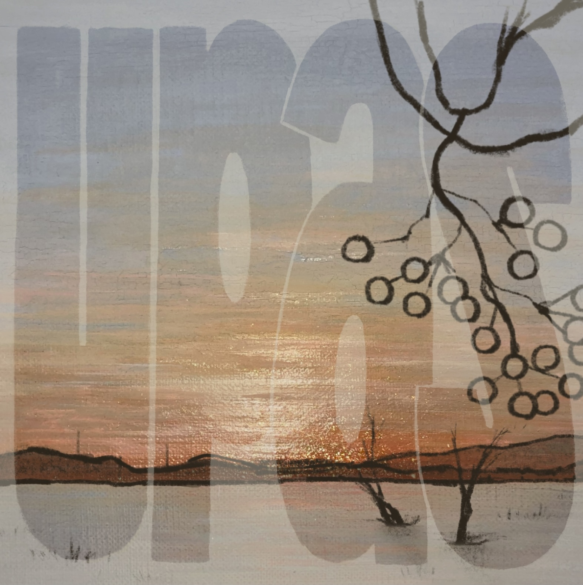

About Me
My research focuses on signal processing, particularly signal processing techniques applied to audio recordings of string instruments, and also includes research in statistical machine learning. I received Ph.D. from Hokkaido University.
Publications (peer reviewd)
-
Natsuki Yoshino, Akira Tanaka,
Methods for Constructing Initial EstimatesValues for Quotient Polynomials in
Approximate Greatest Common Divisor Computation via Variable Projection,
Vol.J109-A, No.7, 2026, doi: 10.14923/transfunj.2025JAP1026 IEICE Trans. Fundamentals (Japanese edition). - Natsuki Yoshino, Akira Tanaka,
Robust Initialization Strategies for Hankel Structured Low-Rank Approximation
via Variable Projection,
2025 Asia Pacific Signal and Information Processing Association Annual Summit and Conference (APSIPA ASC), Singapore, Singapore, 2025, pp. 1584-1589, doi: 10.1109/APSIPAASC65261.2025.11249046. -
Natsuki Yoshino, Akira Tanaka,
Computationally efficient selection criterion of initial equation
in STLN-based structured low-rank approximation,
Journal of Computational and Applied Mathematics, Volume 470,2025, ISSN 0377-0427, https://www.sciencedirect.com/science/article/pii/S0377042725002171, https://doi.org/10.1016/j.cam.2025.116703
Publications (domestic conference)
- 宮澤 拓弥, 吉野 夏樹, 田中 章,
スペクトル分解の実装に依存しない一意なグラフフーリエ変換の構成
電子情報通信学会技術研究報告, EA2025-162,SIP2025-182,SP2025-115(2026-03), pp.520-525, March 2026. - 前嶋 祐里, 吉野 夏樹, 田中 章,
時間周波数制御付き辞書学習によるNMF ベース多成分ドラム分離手法の高精度化
電子情報通信学会技術研究報告, EA2025-148,SIP2025-168,SP2025-101(2026-03), pp.439-446, March 2026. - 吉野 夏樹, 田中 章,
変数射影法を用いた近似最大公約多項式計算における商多項式の初期推定値構成法に対する一検討
第39回信号処理シンポジウム, 札幌 (2024年12月16日-18日) 講演論文集, 6pages. - 吉野 夏樹, 長屋 龍司，田中 章,
擦弦楽器の伝達特性を考慮したヴィオラ録音信号のピッチシフトによるチェロ音の合成
研究報告音楽情報科学（MUS）, 2024-MUS-140, 51, pp.1-5, 2024-06-07,ISSN,2188-8752 - 吉野 夏樹, 田中 章,
ピッチシフトおよびソフトクリッピングによるヴィオラからチェロへの音色変換
電子情報通信学会技術研究報告, EA2023-114,SIP2023-161,SP2023-96(2024-03), pp.309-314, March 2024. - 吉野 夏樹, 山口 菜海, 田中 章, 調波打楽器音分離における低周波領域での分離精度向上
第38回信号処理シンポジウム, 京都(2023年11月6日-8日) 講演論文集, 2pages. -
吉野 夏樹, 田中 章,
誤差を含む構造化行列の一次元零空間推定における計算量削減
電子情報通信学会技術研究報告, 信号処理, SIP2022-51, pp.7-12, Aug. 2022.
Creative Works
"JIKAN" – Suimasen, Machigaimasu (1st Album, 2020)
Role: Composed tracks 4–6, mixing (tracks 4–6), mastering (all tracks).
Description: A collection of six pieces themed around different times of day, created with a free and spontaneous approach.

"Upas" – Suimasen, Machigaimasu (2nd Album, 2021)
Role: Composed tracks 1 & 4, mixing and mastering (all tracks), violin performance (tracks 1, 2 & 4).
Description: Four tracks inspired by "winter in Hokkaido," ranging from classic jazz to electronic styles, including trance and lo-fi.
Role: Arrangement and Mixing 4th track, strings performance (tracks 2, 4).
Description: aaa
Role: Arrangement and Mixing 4th track, strings performance (tracks 1, 4).
Description: aaa
Role: Co-arrangement 2nd track.
Description: aaa
Contact
Email: mailto:n_yoshino@ist.hokudai.ac.jp
GitHub: https://github.com/kadecl
Twitter: https://twitter.com/violalgebra